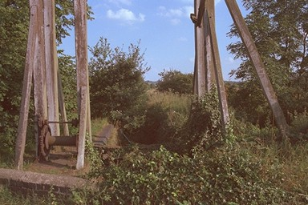

Looking back towards Trench between the wooden uprights of the Hadley Park Lock, the woodwork of another can be seen in the distance. There is a third in the highly-secure grounds of GKN Sankey on Trench Road
The locks here are unusual, with a lower gate raised vertically like a guillotine.
This section underwent some restoration on the 1970s, but it is in disrepair again now.
